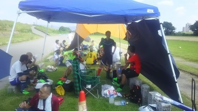
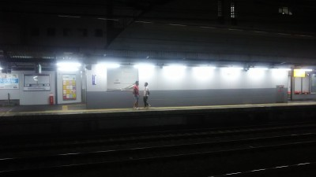

昨日参加されました皆さんお疲れ様でした。
新しい仲間も増え本当に楽しいサッカー祭りでした。
これをおかずに今週仕事頑張れそうです。
そういえばタクちゃんからいいやつ一本決められてるでー。
あとトシキに2点テラさんに1点どれも憎たらしいくらいのいいシュートでした。
あっ?もう一人重要な方の芸術的なループシュートを忘れていました。まっさんあれは外れるのを祈りながら見送るしかないわ。
それとじつはフィールドではディフェンスなら少しは自信があったつもりでしたが、今更ながらみなさんの高い技術を目の当たりにしてそんな気持ちは粉々に砕かれました。
いつもキーパーばかりやらせてもらって申し訳ないっす。ほんとキーパー好きなんです。もっと練習しますので今後もよろしくお願いいたします。
昨日参加された皆さん、お疲れ様でした。
サッカーで紅白戦が出来るなんて、凄いですね！
対外試合とは違った楽しさがあって、また出来ればいいですね。
個人的には、以前のなみはやの試合で調子にのって、スローイン
しまくってから、左の肩～腕辺りに痛みがあり、今も治らず・・・。
これが四十肩かぁ・・。と落ち込んでおります。
昨日も一回だけ軽く投げましたが、かなり痛んだので、しばらくは、
近くの人に投げてもらう様にします。
プレーでも、特に最後の2本くらいは、逆サイドのタクちゃんと
目があって、ピンポイントクロスのつもりが、ミスキック連発。申し訳ない！！
次の試合の時は、もう少し精度の有るプレーが出来る様に頑張ります！
これから、少しずつ涼しくなりますね、みんなで楽しくサッカーしましょう！
風が心地よく感じられて気持ちよく紅白戦ができて楽しかったです。言うても、直射日光４時間はさすがにしんどかったですね。顔面めっさ焼けましたわ（笑）
さてさて、高速ドリブルをかましたあとの数試合は足がブリキになってしまってサボってたのは内緒ですが、個人的には無得点でしたのでショックを隠しきれません。でも、キープしてからのスルーパスが何本か決まって、アシストできたので良かったです。あと、まえちゃんの十八番のまた抜きを本人にしかけて成功したのが気持ちよかったです。後半はブリキだった足も、徐々に回復してきた所で、まっさんとの１対１の場面。何とか振り切ってシュートしましたが、クロスバーにパコ～ンでした。
一人ひとり個性あふれるプレーがあって、それが見れる紅白戦ってほんまいいなぁ。と感じました。また出来たら良いですね！まっさんの小道具テント（あのでかさで小道具？）助かりました。
ありがとうございました。
本当はこーゆうの苦手なので避けたいところですがご指名なので少しだけ書かせてもらいます。
昨日は25名という大人数で４時間フル紅白戦でした。
ほとんど自分より年上の方達ばかりなのに、自分より動けて本当にすごいと思います。自分の体力のなさが情けない(´；Д；`)
ポジションも常に前線にいながら一点も取れないという。
前さんの絶妙なバックパス外してほんまにすいませんでしたぁぁ！！！！
ほかにもいっぱい謝るとこありますがこれからもっと頑張ります。
ごろうさんの絶叫や、たくちゃんの俊足ドリブル、としちゃんの安定なプレーなどなど言い出したらキリないけど目立たなくても細かいとこでみんないいプレーが光ってましたね！
できたら記憶に残るプレーして次こそいい感じの活動報告書きたいと思います。
全然面白くもオチもないけどこれで終わります。

なんなんだ、今日は。１週間前くらいまでは人数が１２人くらいでそこからあれよあれよと増えていって、最後は遅刻、早退、体験参加を合わせて合計２６名の参加がありました。ほんまびっくりやわー、まあ今日ほどまではいらんけど夏場の試合の時はなるべく参加してやー、試合の時、人数少ないからしんどそうで欠席したとか言う極悪もおるしなあ。
まあ、ほんま今までで一番多い参加数でそれはそれで嬉しいんだけどね。
段々と増えていくのに練習メニュー考えてたりしたけど、結局つよぽんタイムで最初から紅白戦をしました。人数減るまでは審判もつけてしましたが結構白熱したりしましたね。最後の１時間は練習にするか確認したらそのままでっていうことで結局４時間延々と１５分の紅白戦をしました。チーム分けは特に適当でしたね。
よっしゃんのシュートから始まって、わだっちのループシュートも見事でしたし、僕も一応芸術的な？シュート決めれたんで良かったっす。
いろんないいプレーもあったりで一つ一つはかけないですが、各自が持ち味のプレーを発揮していたと思います。
トシキとタクちゃんの若手ツープラトン攻撃は守っているほうはしんどかった。個人的には最後は振り切られちゃったけど、タクちゃんとの１対１はおもろかったっす。トシキにドロップキック食らったしなあ（涙）
あとは絶叫男がドフリーのシュートは外すわ、フィールド中央でいきなりこけるは、キーパーしててポロリするわで極悪ぶりを発揮してたなあ。
最後によっしゃんのフリーキックをまともに受けたまっとんがおもろかった（笑）
今日はせっかくの紅白戦でしたので、各自が感想を書いてもらえたらいいなって思います。
特に今日から正式入部となったぶっち、良ければカキコお願いします。うーん後はごろう、トシキは必ず、タクちゃん、わだっち、タカさん、ハマさん、まっとん、むらっち、もりちゃん、つよぽん、すけさんくらいをとりあえず指定で（笑）
それにしても暑かったし、疲れたなあ。小道具が役に立って良かったっす。
参加された皆さんお疲れ様でした。
今日はいいお天気でしたね。
今日は遅刻早退と、体験参加さんも合わせて１４名の参加がありました。先週にはかなり伸びていた草も刈られて短くなってましたね。
グランドなんでシュート練習するつもりだったけど一時間で早退の方も居られたので、ゴールを両方ともペナエリアまで出して最大で７対７の中ゲをしました。
いきなり最初の僕のキックが鬼ッててから始まって、後はみんないろんなポジションとかこなしてましたね。僕がキープして中へクロスと思ったらいつもいてくれるはずのタクちゃんが見当たらなくて、やっぱ試合の時は助かっているなあってしみじみ思いました。
あとはまっとんがむらっちにスパルタ教育受けてた（笑）、なかやんとの競り合いに勝った時のどや顔がおもろかった。僕もありましたが、切れ込んでワンツーで決めたりしてましたね。
ハマさんのクロスに体験参加さんがヘディングでいいシュートを放ったり、ほぼ正式部員のぶっちもいい動きをしてくれてました。
僕的にはゆっきーをダブルタッチで抜いたのが気持ちよかったっす。わだっちにも股抜きしたけど、その後の追い掛けとアタックが凄くて体力的には勝てず（涙）。
あとタカさんの殺人クロスをヘディングしたら首がもげた（笑）
普段キーパーしてくれているまんちゃんもドリぶったりとかボールを追い掛けてギリギリ届かなかったりとか頑張ってました。
よっしゃんはくぼみで足を痛めた感じだったけど、最後はチャリンコで爆走して帰ったから大丈夫だったでしょう（笑）
休憩中にヤスさんの昔の仕事のこと聞いてびっくりした、イメージわかへんわ（笑）
まあ、そんな一日でした。来週は４時間練習です。まったりしましょう。多くの参加をお待ちしています。
本日参加された皆さんお疲れ様でした。
今日はほんと久々に少なくて、急用とかもあって６名の参加でした。少し悩みましたが、グランドを取ってましたし、ボール蹴るだけでも楽しいと思えるのもあって開催しました。参加された皆さん、お疲れ様でした。
最初は鳥かごしてアップしました。結構激しい鳥かごだったような、やっぱり狙い撃ちされると辛いですね（笑）
次は６人参加でボールが５個あったので、むらっちやトクさんがキーパーをしてくれたりで、あとの５人でフリーキックの位置くらいからのシュート練習をしました。特にむらっちの壁は固かったっていうより、５人蹴って、まったく枠に行かない時点で駄目ですけどね（笑）。ていうか僕はなんであんなに左側ばっかり行ったのかが不明？右足で蹴ると痛いしね（涙）
最後の方はまえちゃんがかなり前からシュートしたりになってました（笑）
たかさんも強烈なシュートが結構ありましたが、ぱぴゅーんも多かったかな？
その次は暑いのもあってダラダラとでしたが、２チームに分かれてセットプレイからの攻めと守りを少ししました。なかやんのめっちゃ地面に叩きつけてるやんっていうヘディングがええ感じでした。
最後は３対３でコーンでミニゲ、５分もたへん（笑）、休憩時間のほうが多かったかも。それでもなかやんが結構奮闘してたけど、やっぱり気を抜いた時にまえちゃんい股抜き食らってたなあ。新人の洗礼やから次はトクさんかな（笑）
まあ、そんな感じでした。おしまい。

さっき帰ってきて一段落、睡魔が・・・・、これだけ書いてシャワー浴びて寝ようっと。
今日は飲み会に合計１４人の参加がありました。皆さん、終電ギリギリまでお疲れ様でした。
前回と同じく２名ほど早く来てて、僕も行かないと何を言われるかと思って、１７時２５分くらいに現地に着いたら誰も居無くて（涙）寂しくて、部屋の隅でオカリナ吹いてたら１８時前にわだっちがきてから段々と人数が増えて、１９時過ぎに全員揃いました。
前回と同じ店でしたが初めての人も数名、楽しい時間を過ごせたでしょうか？次回は若いものに幹事をお任せしようかな、タクちゃんよろぴく（笑）
会費集めてたら、小さな声でおりいった相談が・・・て言ってきた人が。内容はお金が足りないから建て替えといてもらえたらって、前代未聞ですな。名誉のために名前は伏せときますが、一日あたりトイチの利息になるので明日でも万は超えるかな（笑）
まあ、いつものメンバーで相変わらずのある意味地獄絵図でした（笑）、ゆっきーが珍しく隣のフロアの女性軍団に声掛けがなかったなあ。
まっとんにはまさん、ごろうが結構的になってたけど、最後のオチに俺を使うのは辞めてくれーーー。まえちゃんとまっとんのカラミ、それに乗っかって滑りまくるオカちゃん、今日は大人しめだったカキさんに容赦なく口撃するわだっちとか、ダークテラー本領発揮だったりとか、タカさんやタクちゃんが制御できないくらいワインラッパ飲みして崩壊してたオカちゃん、初参加ではむらっちは天国組の方で淡々とお話をしていたけどトクさんが地獄組の方で酷い目にあってたのが心配でした、明日から来ないとかならないでね（笑）
特にまえちゃんとまっとんのやり取りがわらけました。まっとんの可愛い悪事に爆笑でした。ちなみに２人は同学年ですよね？（笑）
まあそんな感じでしたね。でもサッカー以外でもこうして集まれる機会もいいもんだと思います。
帰りは京阪組で、タクちゃんとおかちゃんが大阪市内方面で、オカちゃんが絡んでくるのをうざがってたタクちゃん、急にオカちゃんが反対側のホームに来たので、タカさん、ハマさん、まっとんと僕とでとりあえず来た萱島止まりの普通で逃走（笑）
また、今後ともチーム発展のためにご協力お願いします。ポンコツでノーコンの烙印をおされたみじめな男からの報告でっす。
暑かったですね～。それでも全体的にウチが一番、動けていたように思います。交代枠が多いと少しですが、気持ちがラクになりますね！
2本目のスパーク戦で決めたゴールシーンを振り返ると、相手のＣＢとＧＫのどっちがクリアするか微妙な感じのルーズボールだったので、プレッシャーでも掛けたら何か起こるかなぁ。くらいの気持ちでダッシュして追いかけたらクリアボールが真上に上がってしまったのでしょうか？接触が怖かったので、つっこんだけど、相手と当たる直前で真横へ逃げました。避ける事に集中してたので、ボールを完全に見失っていたのですが、後ろの方から、むらっちが「たくちゃん！上上！」って言葉が耳に入ってきた瞬間、ＤＦのクリアミスがあったと解り、すぐさま後を向いて上を見上げたら、ボールが目の前に落ちてきてました。その時、半径２ｍくらいに相手ＧＫとＣＢに挟まれるような感じの位置だったと思います。
目の前で一度ボールが地面まで落ちて、そのバウンドが思ったよりも高くて僕の背丈以上に上がったので、どう処理するかとか頭ではなく、野生の勘ですね。とっさに打ったれーっ思って体をひねって、ジャンピングボレーかましたら、ミートはしませんでしたが、相手の無人ゴールへ飛んでくれました。ラッキーでしたね。むらっちの声掛けはホントいつも助かります。ありがとうございました。
4本目のスパーク戦は、冷静に振り返ると自己中プレーが多かったですね。相手ＤＦのカバーが上手く、抑えられてムキになってたのでしょう。反省。もう少し相手のＤＦの枚数を把握してから勝負を仕掛けるようにしないとですね。時間的にも終了間際、実はちょっとしたドラマがありました。
ＤＦラインのトシキと目が会い、『何とかあと1点とりましょ』なのか『はよ1点とってくださいよ』と言わんばかりに、人差し指をたててジェスチャーをしてきました。
僕もあきらめず、人差し指をたててジェスチャーしかえしました。『1点取る』と。
意地で取りました。最終的に勝ち越せて良かったです。
まっとん、むらっちもナイスゴールでした！テラさんのハットトリックは圧巻でした！
まんちゃん、ＰＫの時、逆サイにフェイント入れてましたよね！惜しかったです！
ＤＦ陣の皆さんにはいつも感謝です。自分、ＤＦザルなんでｗ
参加された皆さん、お疲れ様でした～！次も頑張りましょう＾＾
参加された皆さん暑い中お疲れ様でした。
最近密かに得点王争いに絡もうとしているまっとんおめでとうございます。
それにしてもこの暑さでよく点を取ってくれたり安定したディフェンスしてくれたりで後ろから見ていてほんと皆さんのプレーには頭が下がります。
全員分の光ったプレーを言えといわれればすぐ言えるぐらいでしたよガチで。
こういう時こそゴールマウスをしっかり守らないといけなかったんですが今回も自爆しちゃいました(T-T)
せっかく汚名挽回にわだっちがＰＫの機会を与えてくれたのにここでも男になれませんでした。相手キッカーとは前にも対戦(確かまっさんのハンドで)してまして実はいろいろ駆け引きがあったんですよ。
方向は当たりましたがシュートが早すぎてさわることも出来ませんでした。とめたかったなぁ(-_-)
次からは安全安心をモットーに頑張ります。
それとまずはラインズマンぐらいできるようにしとこうと思います。